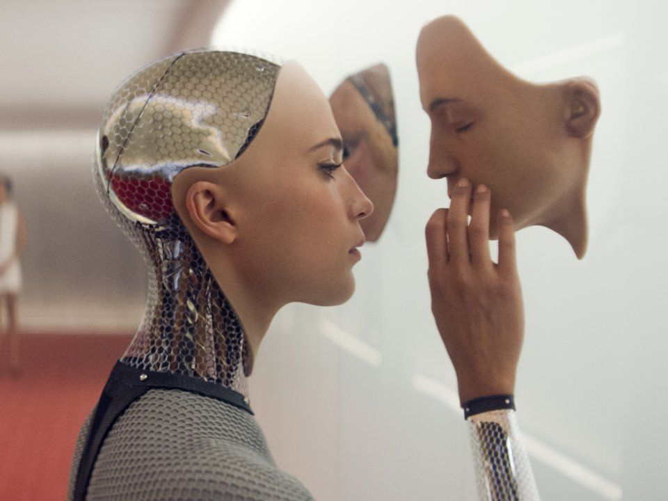
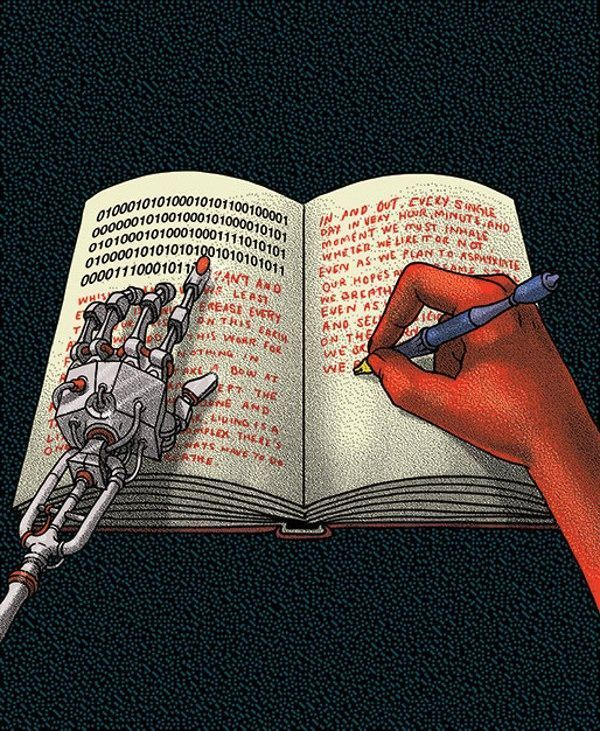
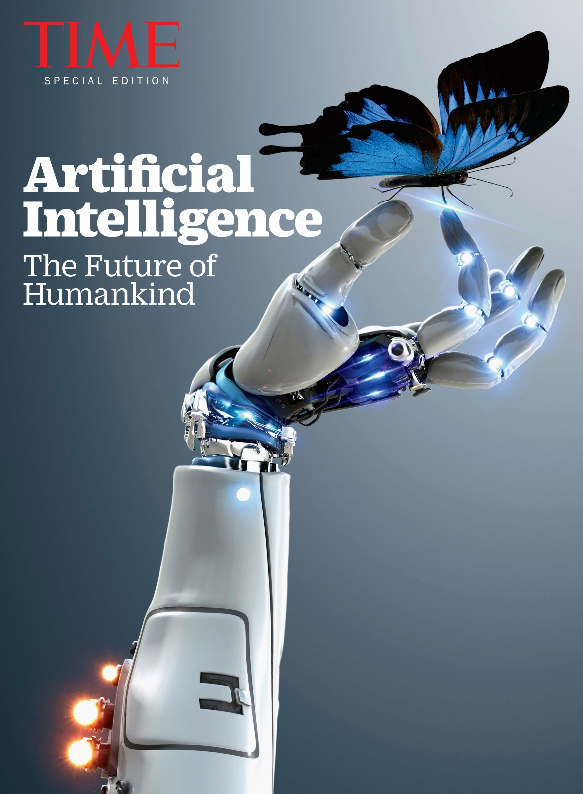
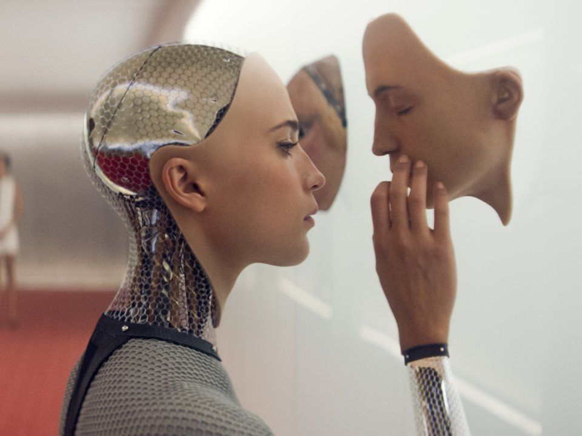
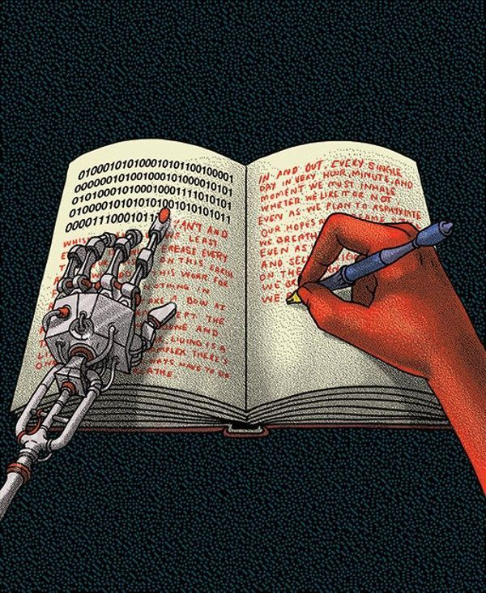
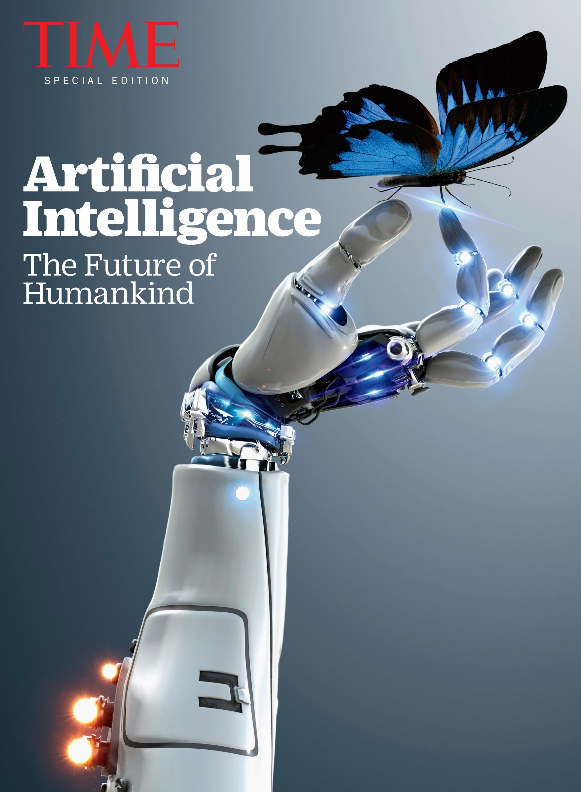

Artificial Intelligence(AI)
What is Artificial Intelligence?
Artificial Intelligence is composed of two words Artificial and Intelligence. Artificial defines "man-made," and intelligence defines "thinking power", or “the ability to learn and solve problems” hence Artificial Intelligence means "a man-made thinking power."
Artificial intelligence is the simulation of human intelligence processes by machines, especially computer systems.Specific applications of AI include expert systems, natural language processing, speech recognition and machine vision.
So, we can define Artificial Intelligence (AI) as the branch of computer science by which we can create intelligent machines which can behave like a human, think like humans, and able to make decisions.
Intelligence, as we know, is the ability to acquire and apply knowledge. Knowledge is the information acquired through experience. Experience is the knowledge gained through exposure (training). Summing the terms up, we get artificial intelligence as the “copy of something natural (i.e., human beings)‘WHO’ is capable of acquiring and applying the information it has gained through exposure.”
Artificial Intelligence exists when a machine can have human-based skills such as learning, reasoning, and solving problems with Artificial Intelligence you do not need to preprogram a machine to do some work, despite that you can create a machine with programmed algorithms which can work with own intelligence.
Intelligence is composed of:
➢ Reasoning
➢ Learning
➢ Problem Solving
➢ Perception
➢ Linguistic Intelligence
Goals of Artificial Intelligence
Following are the main goals of Artificial Intelligence:
- Replicate human intelligence
- Solve Knowledge-intensive tasks
- An intelligent connection of perception and action
-
Building a machine which can perform tasks that requires human
intelligence such as:
- Proving a theorem
- Playing chess
- Plan some surgical operation
- Driving a car in traffic
- Creating some system which can exhibit intelligent behavior, learn new things by itself, demonstrate, explain, and can advise to its user.
What Comprises to Artificial Intelligence?
Artificial Intelligence is not just a part of computer science even it's so vast and requires lots of other factors that can contribute to it. To create the AI-first we should know that how intelligence is composed, so Intelligence is an intangible part of our brain which is a combination of Reasoning, learning, problem-solving, perception, language understanding, etc.
To achieve the above factors for a machine or software Artificial Intelligence requires the following disciplines:
✓ Mathematics✓ Biology
✓ Psychology
✓ Sociology
✓ Computer Science
✓ Neurons Study
✓ Statistics
ADVANTAGES OF ARTIFICIAL INTELLIGENCE
Following are some main advantages of Artificial Intelligence:
➢ High Accuracy with fewer errors: AI machines or systems are prone to
fewer errors and high accuracy as it takes decisions as per
pre-experience or information.
➢ High-Speed: AI systems can be of very high-speed and fast-decision
making, because of that AI systems can beat a chess champion in the
Chess game.
➢ High reliability: AI machines are highly reliable and can perform the
same action multiple times with high accuracy.
➢ Useful for risky areas: AI machines can be helpful in situations such
as defusing a bomb, exploring the ocean floor, where to employ a human
can be risky.
➢ Digital Assistant: AI can be very useful to provide digital assistant
to users such as AI technology is currently used by various E-commerce
websites to show the products as per customer requirements.
➢ Useful as a public utility: AI can be very useful for public utilities
such as a self-driving car which can make our journey safer and
hassle-free, facial recognition for security purposes, Natural
languageprocessing (for search engines, for spelling checker, for
assistant like Siri, for translation like google translate), etc.
DISADVANTAGES OF ARTIFICIAL INTELLIGENCE
One of the key features that distinguishes us, humans, from everything else in the world is intelligence. This ability to understand, apply knowledge and improve skills has played a significant role in our evolution and establishing human civilization. But many people (including Elon Musk the founder of ....) believe that the advancement in technology can create a superintelligence that can threaten human existence.
Every technology has some disadvantages, and the same goes for Artificial intelligence. Being so advantageous technology still, it has some disadvantages which we need to keep in our mind while creating an AI system. Following are the disadvantages of AI:
➢ High Cost: The hardware and software requirement of AI is very costly
as it requires lots of maintenance to meet current world requirements.
➢ Can't think out of the box: Even we are making smarter machines with
AI, but still they cannot work out of the box, as the robot will only do
that work for which they are trained, or programmed. ➢ No feelings and
emotions: AI machines can be an outstanding performer, but still it does
not have the feeling so it cannot make any kind of emotional attachment
with humans, and may sometime be harmful for users if the proper care is
not taken.
➢ Increase dependence on machines: With the increment of technology,
people are getting more dependent on devices and hence they are losing
their mental capabilities.
➢ No Original Creativity: As humans are so creative and can imagine some
new ideas but still AI machines cannot beat this power of human
intelligence and cannot be creative and imaginative.
 




